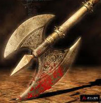

|
DESCRIZIONE  |
Con
l'incantamento minore
Bloodthirsty
Weapon
possono essere incantate solo le armi da corpo a corpo.
Un fedele
di Bazaràk può, attraverso questo incantamento, accumulare il
sangue dei propri avversari, fluido sacro per la propria divinità, al
fine di ottenere una speciale rigenerazione delle ferite di origine
demoniaca. In pratica, quando un fedele di Bazaràk combatte utilizzando
un'arma così incantata costui può accumulare temporaneamente punti
sangue. In particolare, ogni attacco andato a segno contro una qualsiasi
creatura dotata di corpo organico di tipo animale (non quindi esseri
come i non morti, i costruiti, i vegetali, i melmoidi e le creature
estraplanari) permette di accumulare 1 punto sangue. E' necessario che
l'attacco abbia provocato almeno un punto danno alla vittima. Bazaràk,
inoltre, considererà validi solo gli attacchi posti in essere nel corso
di veri e propri combattimenti che risultino in qualche modo impegnativi
per il fedele (ad insindacabile giudizio del Dungeon Master). Attacchi
contro prigionieri, creature che si siano arrese e creature estremamente
deboli rispetto al fedele non saranno in alcun caso considerati validi.
Quando il fedele avrà accumulato 5 punti sangue l'arma sarà carica e non
permetterà al fedele di accumularne ulteriori. Da quel momento in poi,
però, il fedele potrà attivare l'incantamento alzando l'arma ed
invocando Bazaràk. Si tratta di un'azione complessa dalla durata
dell'intero round che richiede componenti somatici, vocali e materiali
(ossia l'arma di sangue carica) ma non il mantenimento della
concentrazione. Al termine del round il fedele rigenererà 1d6+2 (+3 se è
utilizzata un'arma rituale del culto di Bazaràk) punti ferita persi
precedentemente e l'effetto magico non potrà essere più utilizzato fino
al raggiungimento del successivo momento di flusso di energia divina
(non saranno, parimenti, accumulati altri punti sangue). Si noti che si
tratta di una potente rigenerazione di origine demoniaca la quale può
essere indirizzata direttamente sui danni prodotti da tiri critici per
curarli. In ogni caso, però, questa rigenerazione non cura le emorragie.
Solo il fedele che ha utilizzato l'arma in combattimento può utilizzarla
per rigenerare. Qualora, infatti, per qualsiasi motivo, prima
dell'attivazione, l'arma viene impugnata da un'altra creatura i punti
sangue verranno immediatamente azzerati. Parimenti, qualora l'arma non
sia stata attivata, tutti i punti sangue accumulati saranno azzerati al
raggiungimento del successivo momento di flusso di energia divina. |